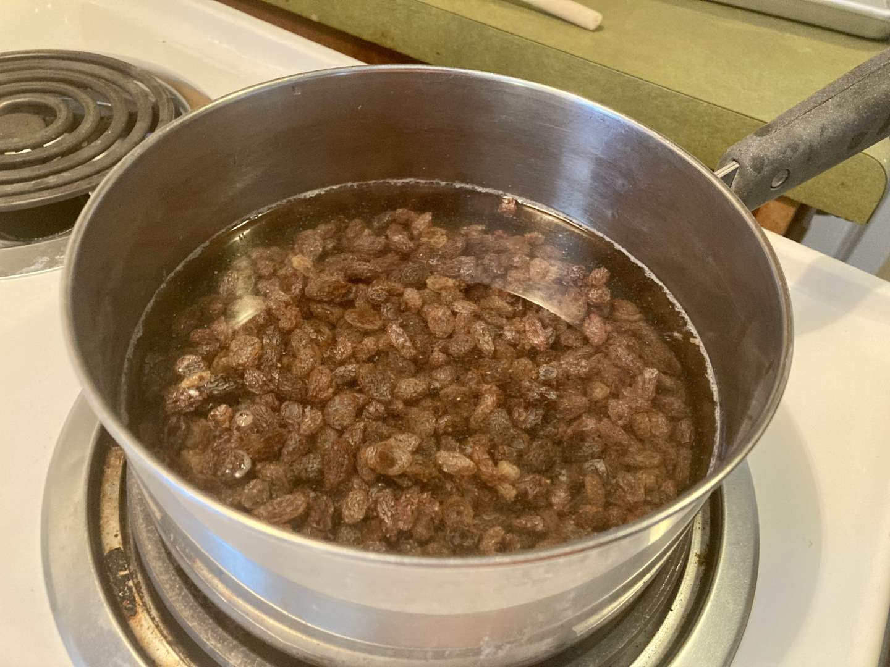
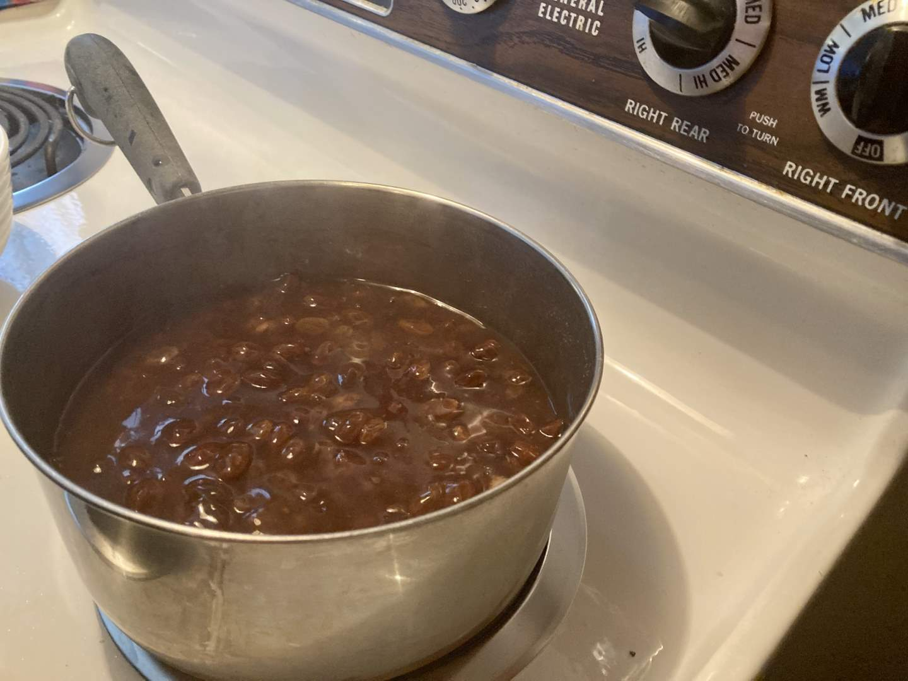
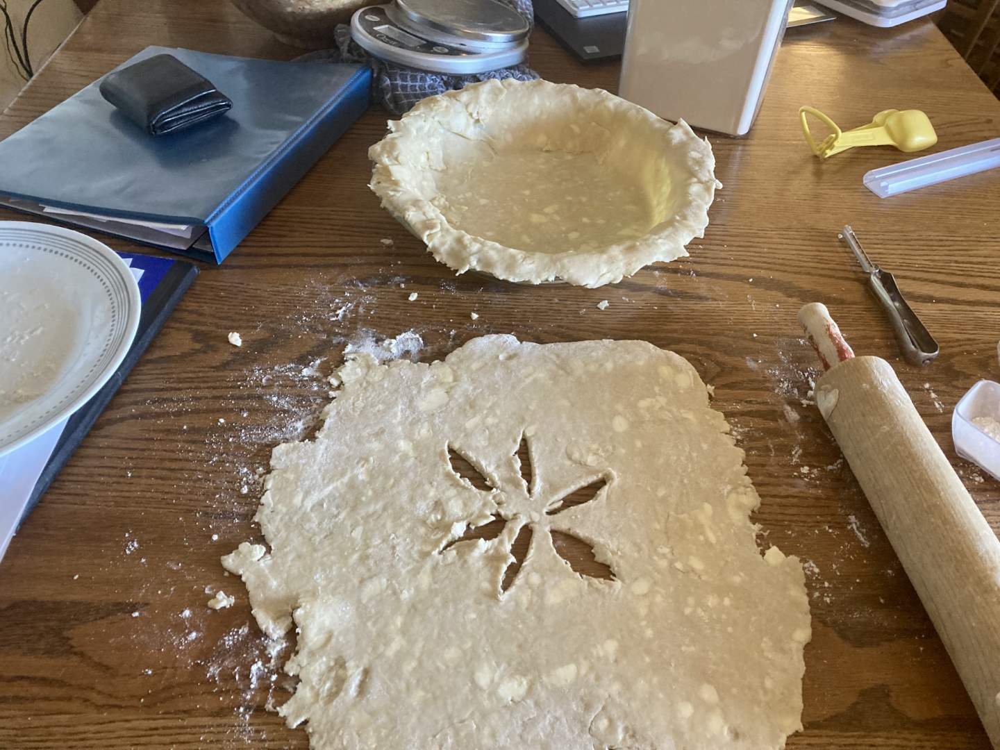
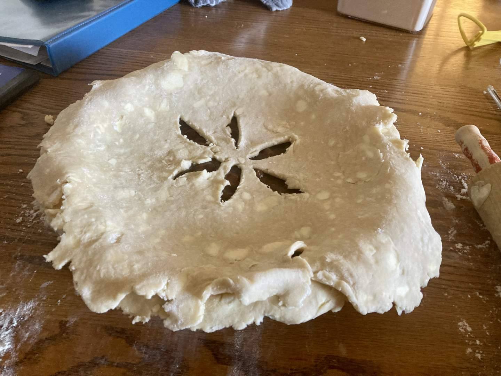
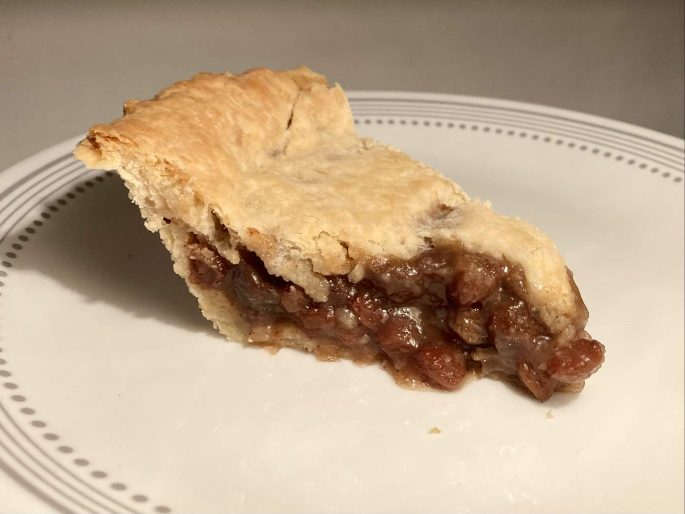

Pie 46: Raisin
2024-05-11Filling recipe from All Recipes.
Crust recipe from Tastes Better From Scratch.
Taste:
Difficulty:
Vibes:
Suggested pairing: probably not fresh grapes
To state the obvious, this pie looks full of baked beans. I want to assure you, innocent reader, that we would never betray the trust you’ve placed in our culinary judgment with such a horrific dish. This pie filling contained nothing but syrup and dried grapes and it tasted pretty good. Not world-class, but not baked-bean-class either.
There’s something vaguely deviant about soaking raisins. (Does anyone else feel this way? So much work went into drying these fruits and yet here we are trying to plump them back up with boiling water. It’s akin to necromancy. Like Osiris after his untimely death and makeshift resurrection, the grapes came back wrong.
 Katie Beth added brown sugar, cornstarch, cinnamon, vinegar, butter, and salt to these re-juiced raisins, producing a thick syrup. Meanwhile, I had whipped up a double crust using our favorite recipe. I pressed one half into a dish and cut steam slits into the other. After pouring the syrup into the bottom crust and adding the top, we baked the pie for half an hour.
After the golden-brown pie cooled sufficiently, it was sliced and distributed. We had guests over who were hesitant due to the appearance, but they eventually tried it after being convinced it had no beans. Most of us thought it was fine, if a little weird in the texture department. Overall, it’s an old-fashioned pie without any big bold flavor. I’ll stick with non-dried fruits going forward.
